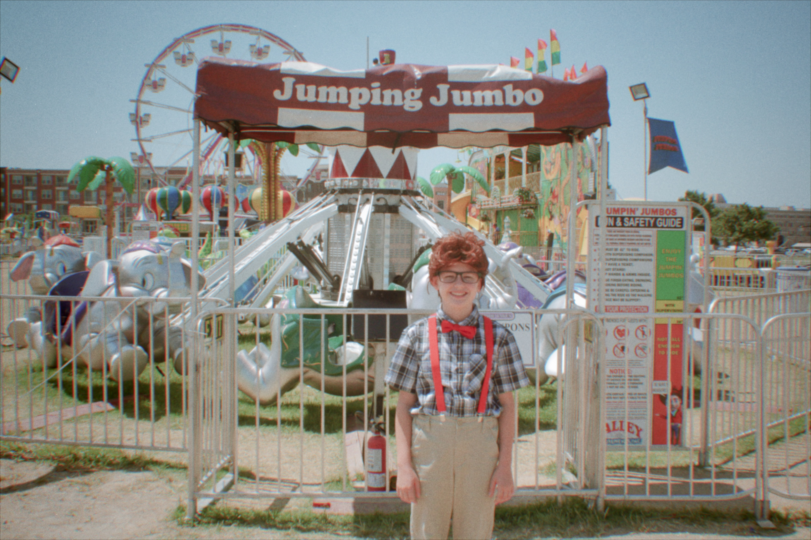
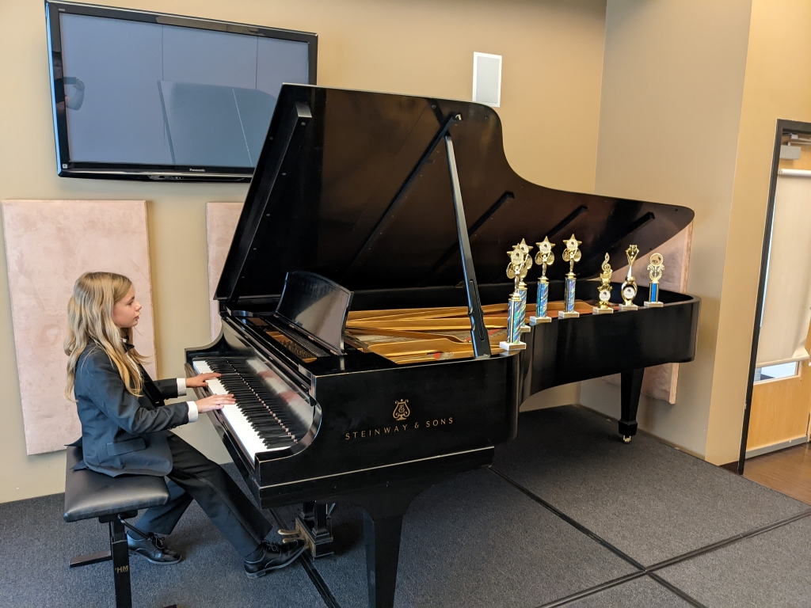
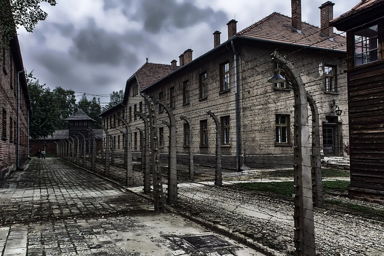
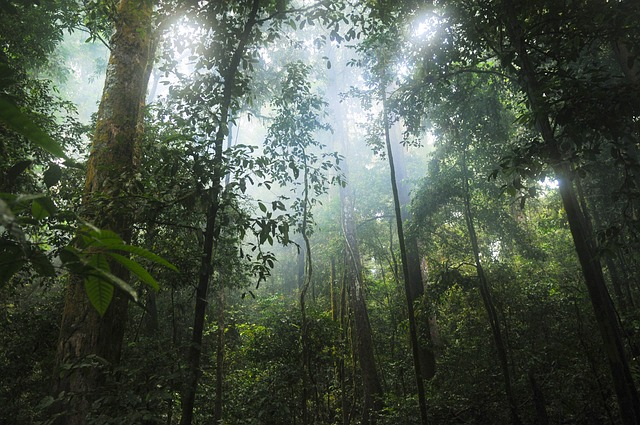
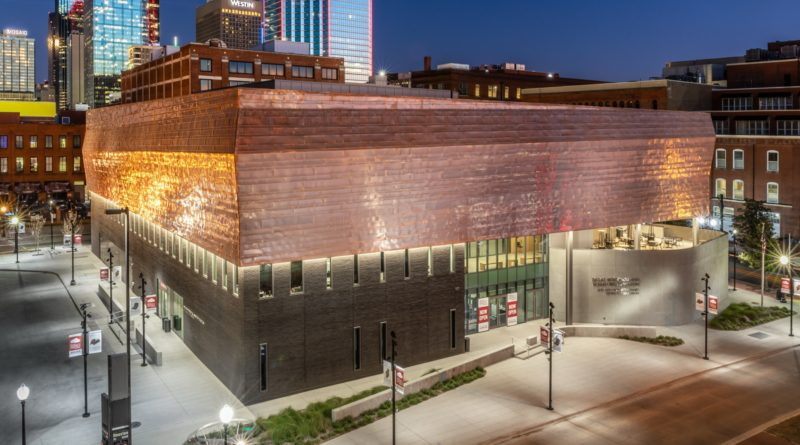

About Us
Bialowas High School, headed by Jessica Bialowas, is a small but prestigious private school with a strong focus on academic excellence and character development. Jessica Bialowas, our Head of School, has a Masters in Education, is a certified teacher, and has over 20 years of experience in the field of education.
Our academic strengths include offering honors and advanced classes, allowing students to work at their own pace, maintaining small class sizes, and providing individualized instruction and curriculum.

Impressive Achievements
Our students accomplished remarkable achievements in the 2022-2023 school year:
- Numerous musicianship awards for excellence in music from Music Institute of North Texas
- Acting Company of Excellence at North Texas Performing Arts (NTPA)
- NowBeat Project (2023)
- Outstanding Studios Innovation (2022)
- Runnerup for Performer in a Musical
- Spotlight Award for Seussical the Musical
- Dedication Award for NTPA Academy
- Respect Award for Treasure Island
Our School
A student in a costume in front of
A student playing piano

A student riding a mountain bike

A student flying a plane

A student on a Flow Rider

A student sledding
Educational Philosophy
At Bialowas High School, we follow a secular educational philosophy that emphasizes diverse viewpoints and a global worldview. We believe in providing real-world experiences through field trips and travel opportunities.

Auschwitz
Jungles of Costa Rica
Dallas Civil Rights Museum
Citadel in Halifax
Louvre Museum
What People Are Saying
I like the later start time than other high schools because I don't have to wake up very early in the morning, and I can be more focused. - Tyler
I like that I can work ahead so that weeks I'm busy in extracurricular activities, I have a lighter workload. - Emma
Great student to teacher ratios! - Kris
School Hours and Calendar
High school starts at 9am, allowing teens to get plenty of rest and fully participate in class. The school day can last until 5pm, with a flexible schedule that accommodates specialty classes off-campus and travel opportunities.
For the 2023-2024 school year, the start date is August 14th, and the end date is May 24th. We also offer shorter summer classes for those who need or want additional instructional time.